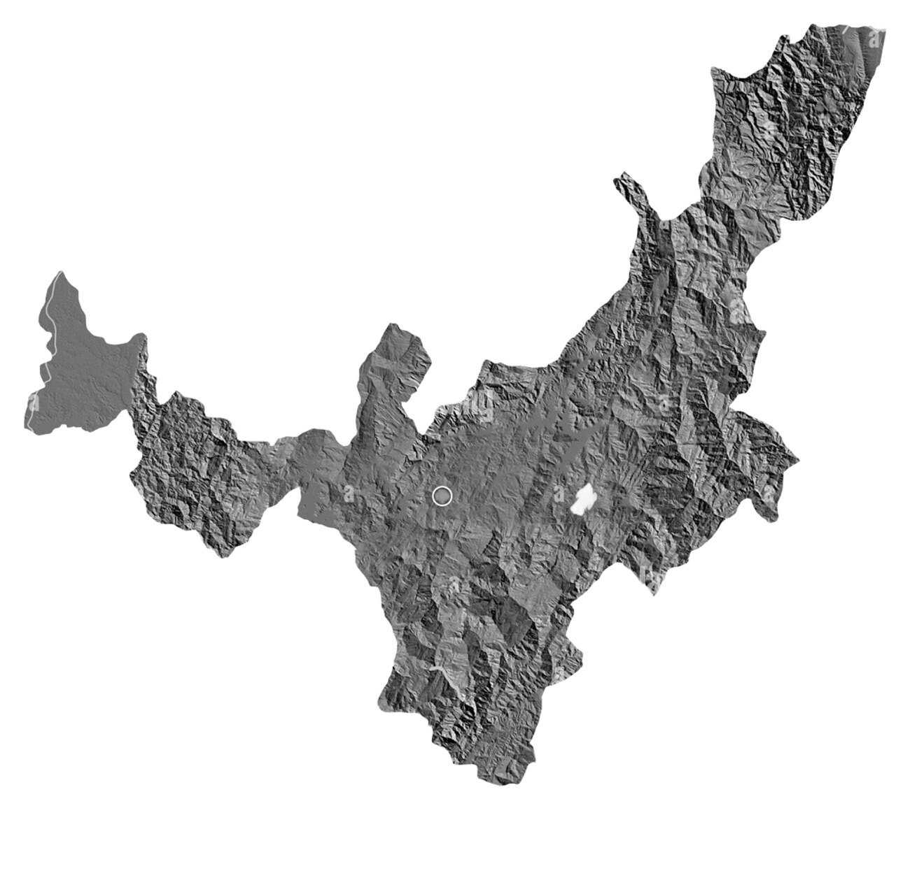

Boyacá

5 Cosas que Debes Conocer sobre Boyacá
- Descripción Breve: Boyacá es un departamento ubicado en el centro de Colombia, conocido por su rica historia, su variada geografía y su papel clave en la independencia del país. Su capital es Tunja, una de las ciudades más antiguas de Colombia.
- Patrimonio Histórico: Boyacá fue el escenario de importantes batallas durante la Guerra de Independencia, como la Batalla de Boyacá en 1819, que fue decisiva para la libertad de Colombia del dominio español. Este evento es conmemorado cada 7 de agosto.
- Cultura y Tradiciones: La cultura boyacense es rica en tradiciones, incluyendo la música andina, danzas folclóricas y festividades como la Fiesta de la Independencia y el Festival del Tiple.
- Naturaleza y Paisajes: El departamento cuenta con una diversidad de paisajes que van desde montañas y páramos hasta valles y ríos, siendo el Parque Natural Chivor uno de sus principales atractivos naturales.
- Economía: Boyacá es conocido por su agricultura y ganadería, así como por la minería, siendo la extracción de esmeraldas uno de sus recursos más valiosos. La producción de artesanías, especialmente en lugares como Ráquira, también es significativa.